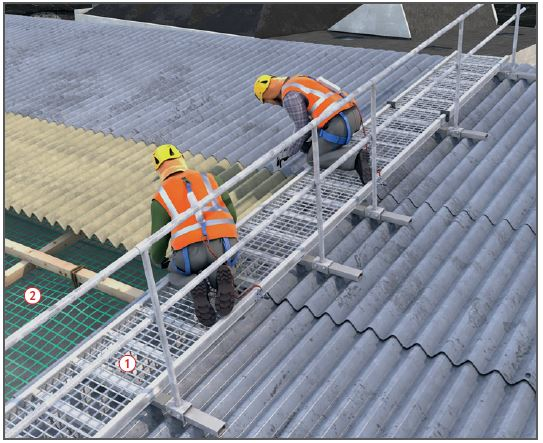

- eine Mindestbreite von 50 cm haben,
- gegen Verschieben und Abrutschen gesichert werden.
- mindestens der Sortierklasse S 10 oder Festigkeitsklasse C24 und
- in ihren Abmessungen der Tabelle 1 entsprechen.
Dachdeckung mit Wellplatten |

| 1 | Größte zulässige Stützweiten in m für Lauf- und Arbeitsstege aus Holz | |||||
| Brett- oder Bohlenbreite cm |
Brett- oder Bohlendicke cm |
|||||
| 3,0 | 3,5 | 4,0 | 4,5 | 5,0 | ||
| 20 | 1,25 | 1,50 | 1,75 | 2,25 | 2,50 | |
| 24 und 28 | 1,25 | 1,75 | 2,25 | 2,50 | 2,75 | |
07/2021